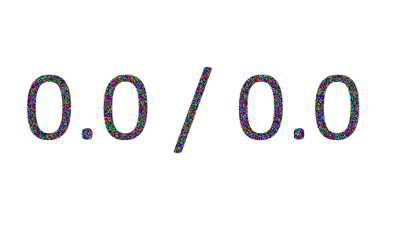
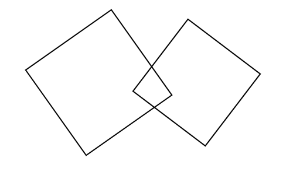

这是一个关于简单数学运算在不同软件实现之间存在差异的故事。这些运算回答的问题是：“两个浮点值里哪个更大”（或者更小）。
针对浮点数的 Min 和 Max 实现各不相同，而且在大多数情况下，它们的行为并不符合
IEEE-754–2008 标准（IEEE Standard for Binary Floating-Point Arithmetic）。
来看下面这个例子，它是 Max 的一个朴素的通用 JavaScript 实现：
function Max(a, b) {
if(a > b) {
return a;
} else {
return b;
}
}这个实现在很多方面都不正确：
- 它处理不了 -0 +0 的情况（+0 应该大于 -0）；
- 它没有按照 JavaScript 规范处理输入和参数个数（-Infinity / +Infinity 的情况）
还有最有意思的一点：
- 它无法正确处理 NaN 值（Not-a-Number）

那么，当 a 是 NaN、b 是 NaN，或者 a 和 b 都是 NaN 时，正确的处理方式是什么呢？只要用到浮点数，我们就能找到对 IEEE 标准的引用，接着就会找到 minNum 和 maxNum 这两个运算的定义，
它们优先选择数值，而不是 NaN 值，所以 Max(NaN, 数值) = Max(数值, NaN) = 数值。
但兼容 IEEE 的现代实现并不多。
按 IEEE 754–2008 处理 NaN 的库，
即 Max(NaN, 数值) = Max(数值, NaN) = 数值：
C 语言，自 C99 起 http://en.cppreference.com/w/c/numeric/math/fmax
不按 IEEE 754–2008 处理 NaN 的库，
即 Max(NaN, 数值) = Max(数值, NaN) = NaN：
- ECMAScript，
规范见 http://www.ecma-international.org/ecma-262/5.1/#sec-15.8.2.11，V8 的实现见 https://github.com/v8/v8/blob/cd81dd6d740ff82a1abbc68615e8769bd467f91e/src/js/math.js#L77 - .NET（C#、F# 以及其他使用 Math 模块的语言；在 F# 中是 max 运算符）
https://github.com/dotnet/coreclr/blob/bc146608854d1db9cdbcc0b08029a87754e12b49/src/mscorlib/src/System/Math.cs#L381
参数为 NaN 时抛出异常的库，例如：
- Ruby（Enumerable 上定义了 max/min 方法，但没有标准的 Max/Min 实现），
会抛出“comparison of Float with NaN failed”。可 NaN 的类仍然是 float。更早版本的 ruby 解释器可能会抛出“comparison of Float with Float failed”异常。
不满足交换律的行为
即 Max(数值, NaN) 不等于 Max(NaN, 数值)
Swift、Haskell、OCaml
有变通的办法。
结论
看来在大多数情况下，我们都应该确保 Min/Max 函数的所有参数都不是 NaN，因为视 Min/Max 的具体实现而定，结果可能会被另一个参数污染。
IEEE 标准规定了标准行为，但在现代语言里，你多半会看到另一种行为。
为什么？
- 似乎是因为除了异常，没有别的办法把错误的来源带进结果里。而异常被认为很慢；
- 工程师们写标准库时，会参照别的标准库的实现；
- 标准的 pdf 本身不是免费的。
- “一个实现通吃所有情况”的通用写法看起来很诱人。
- 这是个边界情况，对开发者来说大多数时候并不重要。我们只要坐等问题找上门就行了。
p.s. 还有 (± Infinity, NaN) 这个边界情况。
虽然标准里关于浮点运算的条目都能查到，但你最好还是先读一读 [你最喜欢的编程语言] 的语言规范。

原文发表于 Medium：https://medium.com/@nettsundere/the-implementation-of-min-and-max-operations-for-floating-point-types-80d3616c084d